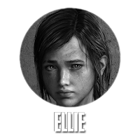
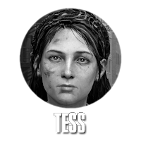

|
Joel (interpretado pelo ator Troy Baker) é o principal personagem jogável de The Last of Us.
Originalmente do Texas, Joel estava com quase trinta anos quando o surto de Cordyceps ocorreu. Ele fugiu junto com seu irmão Tommy e sua filha Sarah.
Joel fez o que foi preciso para sobreviver nos anos que se seguiram.
Ele tornou-se um sobrevivente endurecido, forte física e mentalmente, devido todos os anos passados dentro do mundo pós-apocalíptico.
Joel possui um estilo de luta brutal e é capaz de defender-se sozinho.
|
|

Ellie (interpretada pela atriz Ashley Johnson) é uma órfã de catorze anos e a personagem jogável secundária de The Last of Us, uma das poucas personagens a nunca ter conhecido
o mundo antes da infecção. Muito de sua história pregressa é revelada na série limitada de quadrinhos The Last of Us: American Dreams e no conteúdo para download
The Last of Us: Left Behind.
Ellie consegue sobreviver à mordida de um Infectado, sendo colocada aos cuidados de Joel para ser escoltada até os Vaga-Lumes.
Ela inicialmente fica incomodada pela severidade dele, porém aos poucos começa a sentir um forte ligação.
|
|
Marlene (interpretada pela atriz Merle Dandridge) é a líder dos Vaga-Lumes, um grupo miliciano contra autoridades das zonas de quarentena. Ela foi encarregada pela mãe de Ellie de cuidar
de sua filha, porém a menina apenas a conheceu anos depois. Ela é ferida em Boston e se oferece para recompensar Joel e Tess com um grande carregamento de armas em troca que eles
escoltem Ellie para fora da zona de quarentena.
|
|

Tess (interpretada pela atriz Annie Wersching) é a parceira de contrabando de Joel. Os dois caçam seu antigo associado Robert à procura de seu
carregamento roubado de armas, recebendo de Marlene a oferta de terem as mercadorias devolvidas com um bônus caso concordem em
levar Ellie para fora da zona de quarentena até o capitólio de Boston.
|
|
Tommy (interpretado pelo ator Jeffrey Pierce) é o irmão mais novo de Joel. Ele escapou junto com Joel e Sarah em seu carro depois do surto inicial da infecção, passando a defender
o irmão e a sobrinha depois de baterem em um caminhão. Joel e Tommy inicialmente sobreviveram juntos após o apocalípse, porém suas visões diferentes e os modos de Joel
fizeram com que os dois se afastassem e Tommy entrasse para os Vaga-Lumes.
|